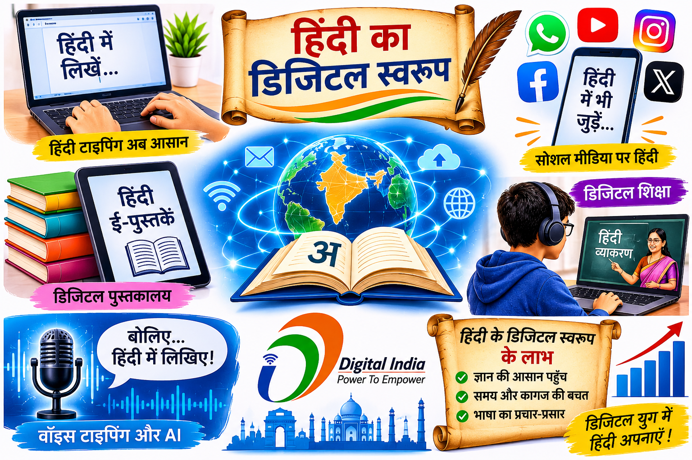
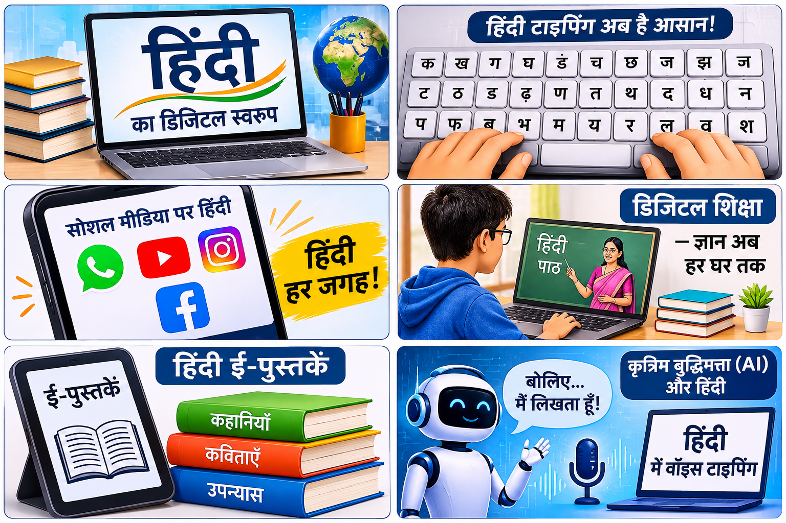

विशेष डिजिटल संस्करण | 2026
तकनीक के युग में हिंदी भाषा की नई पहचान
हिंदी हमारी संस्कृति, विचारों और अभिव्यक्ति की महत्वपूर्ण भाषा है। आज इंटरनेट और आधुनिक तकनीक के माध्यम से हिंदी पूरी दुनिया में नई पहचान बना रही है। इस डिजिटल पत्रिका में हम हिंदी के बदलते स्वरूप और तकनीक के साथ उसके संबंध को समझेंगे।
क्षमा करें! इस शब्द से संबंधित कोई लेख नहीं मिला।
हिंदी भारत की प्रमुख भाषाओं में से एक है। यह हमारे विचारों, भावनाओं और संस्कृति को व्यक्त करने का एक महत्वपूर्ण माध्यम है। आधुनिक समय में तकनीक का तेजी से विकास हुआ है। इंटरनेट, मोबाइल और कंप्यूटर ने हमारे जीवन को बदल दिया है। अब हिंदी का प्रयोग केवल पुस्तकों और समाचार पत्रों तक सीमित नहीं है, बल्कि डिजिटल दुनिया में भी इसका उपयोग तेजी से बढ़ रहा है।
डिजिटल स्वरूप का अर्थ है किसी भाषा का कंप्यूटर, मोबाइल और इंटरनेट जैसे इलेक्ट्रॉनिक माध्यमों पर उपयोग। आज हम हिंदी में संदेश लिख सकते हैं, ई-पुस्तकें पढ़ सकते हैं, वेबसाइट बना सकते हैं और वीडियो देख सकते हैं। इससे हिंदी भाषा का प्रसार और अधिक आसान हो गया है।
हिंदी का प्रयोग अनेक डिजिटल माध्यमों में किया जाता है। मोबाइल फोन, कंप्यूटर, सोशल मीडिया, ब्लॉग, वेबसाइट और ऑनलाइन शिक्षा इसके प्रमुख उदाहरण हैं। इनके माध्यम से लोग हिंदी में जानकारी प्राप्त कर सकते हैं और अपने विचार दूसरों तक पहुँचा सकते हैं।
पहले कंप्यूटर पर हिंदी लिखना कठिन माना जाता था, लेकिन यूनिकोड तकनीक ने इसे सरल बना दिया है। हिंदी कीबोर्ड, ऑनलाइन टाइपिंग टूल और वॉइस टाइपिंग की सहायता से अब हिंदी में आसानी से लिखा जा सकता है। बोलकर लिखने की सुविधा भी हिंदी के उपयोग को बढ़ावा देती है।
डिजिटल हिंदी के अनेक लाभ हैं। इससे शिक्षा प्राप्त करना आसान हुआ है। विद्यार्थी ऑनलाइन हिंदी में अध्ययन सामग्री पढ़ सकते हैं। दूर बैठे लोगों से हिंदी में बातचीत की जा सकती है। इसके अलावा डिजिटल माध्यमों से हिंदी साहित्य और संस्कृति का प्रचार भी तेजी से हो रहा है।
हिंदी के डिजिटल विकास के सामने कुछ चुनौतियाँ भी हैं। कई बार हिंदी में सही जानकारी उपलब्ध नहीं होती। कुछ वेबसाइटों पर वर्तनी और भाषा की गलतियाँ मिलती हैं। अंग्रेजी भाषा का अधिक प्रभाव भी हिंदी के शुद्ध प्रयोग को प्रभावित करता है। हमें इन समस्याओं को दूर करने का प्रयास करना चाहिए।
आने वाले समय में हिंदी का डिजिटल उपयोग और अधिक बढ़ेगा। कृत्रिम बुद्धिमत्ता, मशीन अनुवाद, ऑनलाइन शिक्षा और वॉइस असिस्टेंट जैसी तकनीकों से हिंदी का प्रयोग आसान होगा। इससे दुनिया के अलग-अलग देशों के लोग भी हिंदी से जुड़ सकेंगे।
हिंदी का डिजिटल स्वरूप आधुनिक तकनीक के विकास का महत्वपूर्ण हिस्सा है। इंटरनेट और मोबाइल ने हिंदी को नई पहचान दी है। हमें तकनीक का सही उपयोग करते हुए अपनी भाषा का सम्मान करना चाहिए और उसके विकास में योगदान देना चाहिए।
इंटरनेट ने हिंदी भाषा को एक नया मंच प्रदान किया है। आज करोड़ों लोग इंटरनेट पर हिंदी में जानकारी खोजते हैं। हिंदी में ब्लॉग, वेबसाइट, समाचार और शैक्षिक सामग्री उपलब्ध है। इससे हिंदी भाषा का उपयोग देश-विदेश में बढ़ रहा है।
गूगल ने हिंदी भाषा को डिजिटल दुनिया में आगे बढ़ाने में महत्वपूर्ण योगदान दिया है। गूगल सर्च, गूगल ट्रांसलेट और वॉइस टाइपिंग जैसी सुविधाओं से हिंदी में जानकारी खोजना, समझना और लिखना आसान हुआ है। इन सेवाओं के कारण अधिक लोग अपनी भाषा में इंटरनेट का उपयोग कर पा रहे हैं।
पहले लोग हिंदी समाचार पत्रों और रेडियो के माध्यम से समाचार प्राप्त करते थे। आज ऑनलाइन समाचार वेबसाइट, मोबाइल ऐप और सोशल मीडिया के माध्यम से हिंदी समाचार तुरंत उपलब्ध हो जाते हैं। डिजिटल पत्रकारिता ने समाचार पढ़ने और साझा करने के तरीके को बदल दिया है।
आज हिंदी की अनेक पुस्तकें, कहानियाँ, कविताएँ और उपन्यास डिजिटल रूप में उपलब्ध हैं। ई-पुस्तकों और डिजिटल पुस्तकालयों की सहायता से विद्यार्थी और पाठक कहीं भी हिंदी साहित्य पढ़ सकते हैं। इससे साहित्य अधिक लोगों तक पहुँच रहा है।
कृत्रिम बुद्धिमत्ता यानी AI आधुनिक तकनीक का महत्वपूर्ण हिस्सा है। AI की सहायता से हिंदी में अनुवाद, प्रश्नों के उत्तर, लेखन और आवाज पहचानने जैसे कार्य किए जा सकते हैं। इससे हिंदी भाषा का डिजिटल उपयोग और अधिक सरल हो रहा है।
हिंदी भाषा के विकास में हम सभी की जिम्मेदारी है। हमें इंटरनेट पर सही और शुद्ध हिंदी का प्रयोग करना चाहिए। हिंदी में लेख, कहानियाँ और उपयोगी जानकारी साझा करनी चाहिए। हमें अपनी मातृभाषा का सम्मान करते हुए नई तकनीक को अपनाना चाहिए।
ज्ञान संदेश: तकनीक का करें सही उपयोग, हिंदी को दें डिजिटल युग में नया स्वरूप।

हिंदी और डिजिटल दुनिया

तकनीक के साथ हिंदी का विकास
हिंदी का डिजिटल स्वरूप आधुनिक तकनीक के विकास का एक महत्वपूर्ण हिस्सा है। इंटरनेट, मोबाइल, कंप्यूटर और सोशल मीडिया ने हिंदी भाषा को एक नया मंच प्रदान किया है। आज हिंदी का प्रयोग ऑनलाइन शिक्षा, डिजिटल पुस्तकालयों, समाचार, वेबसाइटों और कृत्रिम बुद्धिमत्ता (AI) में भी किया जा रहा है। यूनिकोड और वॉइस टाइपिंग जैसी तकनीकों ने हिंदी में लिखना और पढ़ना आसान बना दिया है। डिजिटल माध्यमों से हिंदी का प्रचार-प्रसार पूरी दुनिया में हो रहा है। हमें आधुनिक तकनीक के साथ अपनी भाषा को अपनाना चाहिए और हिंदी के विकास में योगदान देना चाहिए।